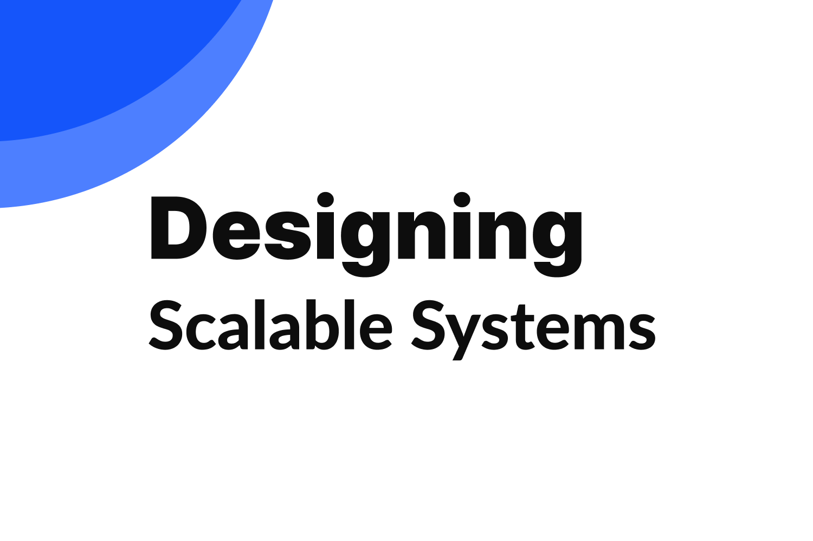
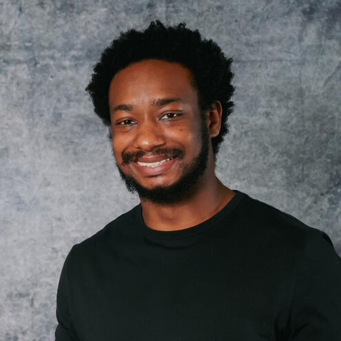
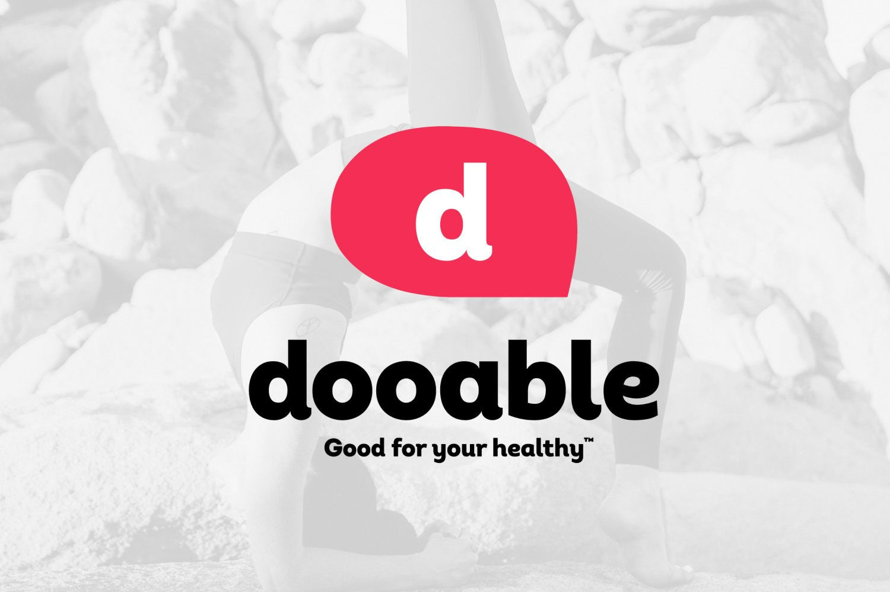
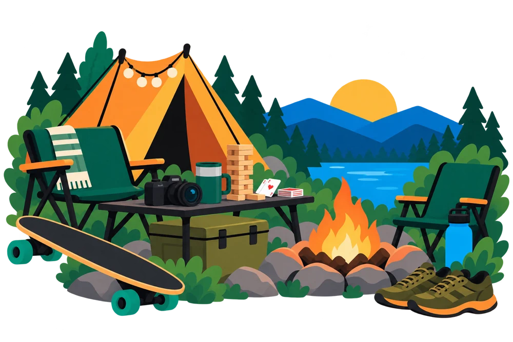

Designing Scalable Systems
A curated snapshot of nearly three years designing long-lived product systems for a SaaS platform that serves professional photography studios and their customers.
Hi there! I'm a Senior Product Designer with 9 years of experience, turning research into product strategy for B2B and B2C products, from e-commerce to healthcare. I'm CPACC certified, so accessibility shapes my decisions from the start, not as a fix at the end. At Captura, I work with Product and Engineering to design tools for photography studios and the families they serve, and I use AI to move faster, from exploring ideas to shipping UI and accessibility improvements myself. Previously, I designed AR/VR apps and healthcare tools focused on wellness and cancer prevention.


A curated snapshot of nearly three years designing long-lived product systems for a SaaS platform that serves professional photography studios and their customers.

A UX audit and redesign of a health coaching app, built to boost engagement and make it easier to connect with a coach.
A redesign of the public-facing juror experience, made clearer, more accessible, and responsive.
My process is grounded in curiosity: I dig into the why, design thoughtfully, and collaborate closely to make sure what we ship truly works for users.
When I'm not in front of my computer, you'll find me geeking out over the latest tech trends, collecting board games, vibing to music, or spending quality time with my wife. I'm a huge foodie, love fitness and camping, and am determined to revive my longboarding career (lol). Oh, and I'm always capturing the world through my camera lens.

I'm always excited to meet new people and share ideas, so feel free to connect!